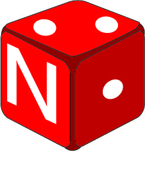

This simple bookmarklet gives Netflix TV shows a random-episode functionality.
Installation
Drag this link to your bookmarks bar:
RandomFlix
(Your bookmarks bar is the list of links that appear at the top of your browser, usually below the URL of your current page. If you don't see a bookmarks bar in your browser a quick google search for "show bookmarks bar [your browser]" should result in instructions on enabling it.)
Instructions
Navigate to the Netflix show you want to watch. Click on the RandomFlix button in your bookmarks bar to see a random episode. That's it, have fun!